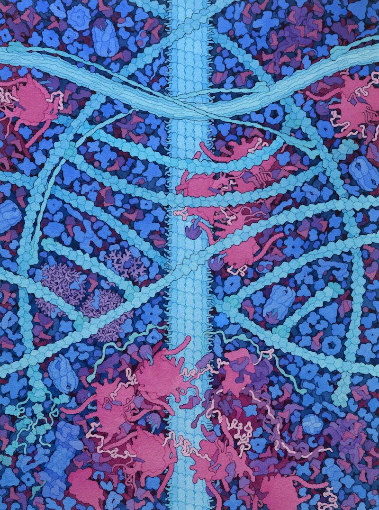
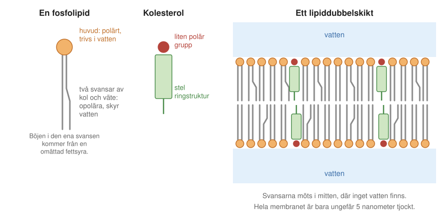
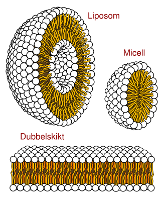
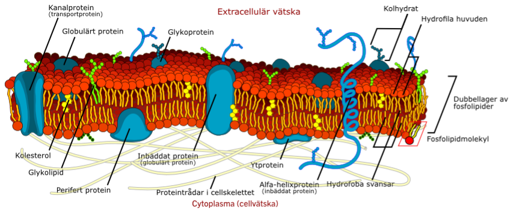
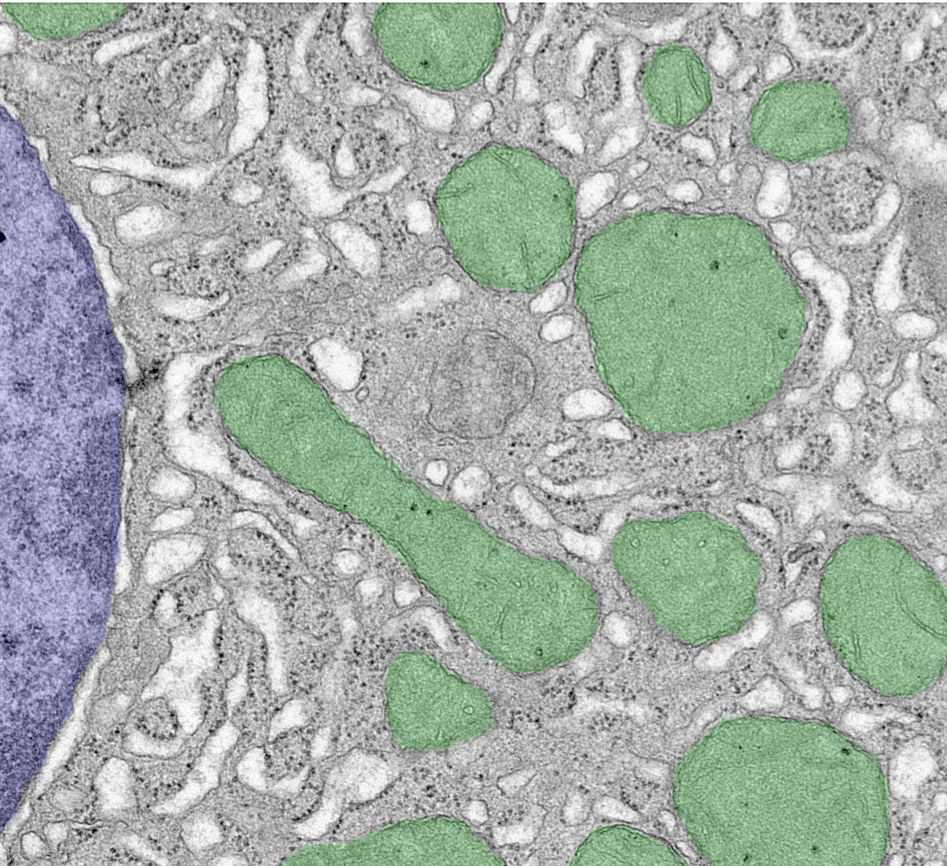
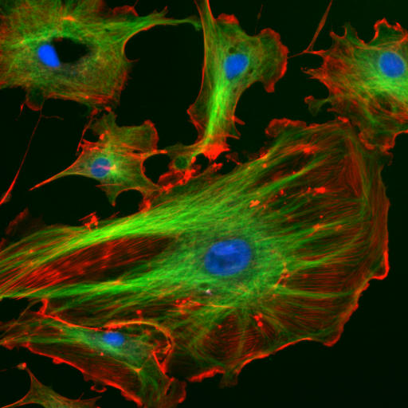
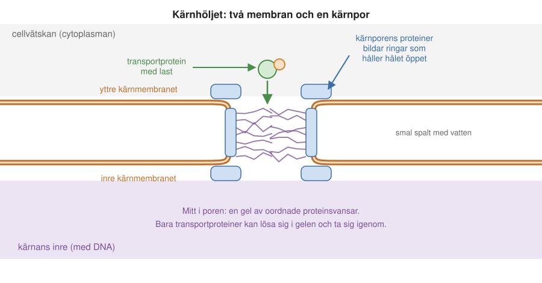
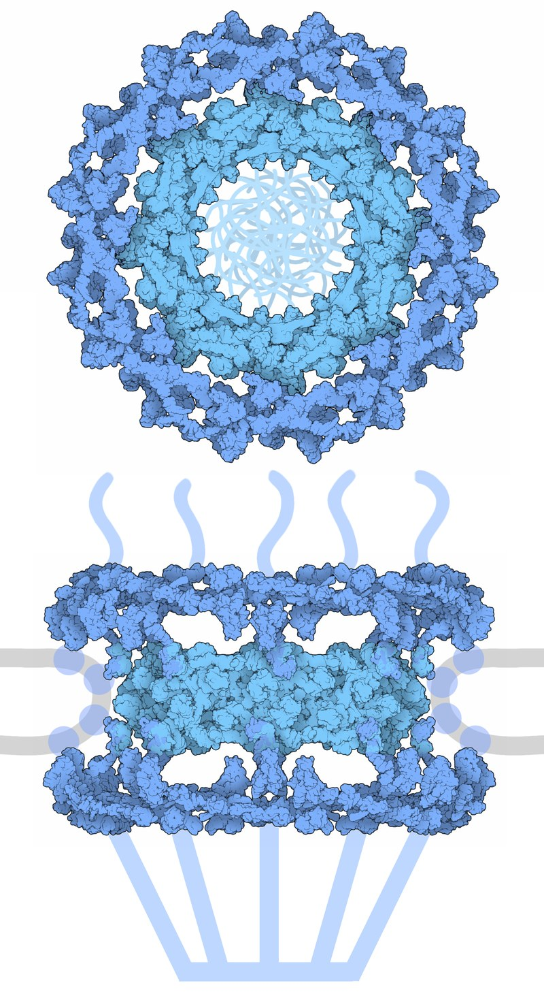
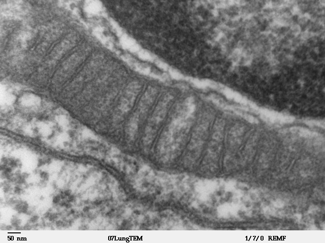
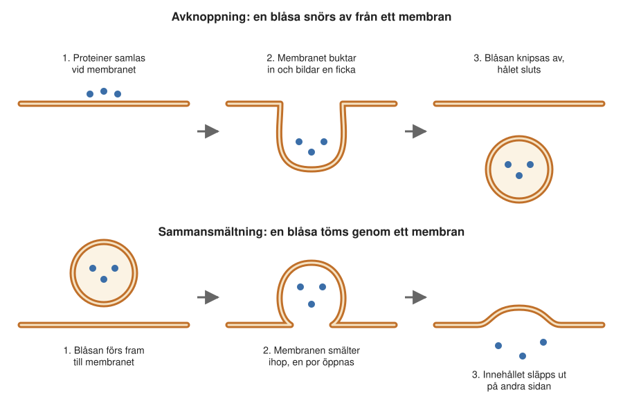

7 Biomembran
En vit blodkropp rullar fram längs insidan av ett blodkärl. Den håller sig kvar mot kärlväggen med hjälp av proteiner på sin yta, som haker fast i proteiner på kärlväggens celler, släpper och haker fast igen. Plötsligt stannar den. Den ändrar form, pressar sig in mellan två av kärlväggens celler och tar sig ut ur blodkärlet, på väg mot en infektion någonstans i vävnaden.
Det här är början på en känd animerad film, The Inner Life of the Cell, som gjordes vid Harvarduniversitetet för att visa vad som händer i och omkring en cell. Nästan allt i filmen handlar på ett eller annat sätt om membran: de tunna hinnor som omger varje cell, som delar in cellens inre i olika rum, och som proteinerna sitter i och arbetar vid.
I tidigare kapitel har vi mest talat om DNA och proteiner. Nu är det dags för en tredje sorts molekyler, lipiderna, och för de membran som de bygger. I det här kapitlet ser vi hur membranen är uppbyggda och hur cellen använder dem. Vi ser också på två saker som hänger nära ihop med membranen: cytoskelettet, som ger cellen dess form, och cellkärnan. I nästa kapitel (1) handlar det om proteinerna som sitter i membranen.
7.1 En cell är full av molekyler
Filmen om den vita blodkroppen är vacker, men den är också missvisande på en viktig punkt. Där ser det ut som om proteinerna flyter omkring med långt avstånd mellan sig, i en klar vätska. Så är det inte alls. Inne i en cell ligger proteinerna så tätt att de hela tiden stöter i varandra, i membranen och i cellens trådar (Figur 7.1). Filmer och bilder måste förenkla: skulle man rita allt som finns där, skulle man inte se någonting.
Proteinhalten i cellen är så hög att den inte går att återskapa i ett provrör: där skulle proteinerna klumpa ihop sig. Inne i cellen fungerar det ändå.

Trängseln får följder. Ett protein kan inte färdas rakt från en plats till en annan, utan knuffas hela tiden hit och dit av sina grannar, i en oregelbunden sicksackrörelse (Kapitel 6). Ett nytt protein som just håller på att tillverkas av en ribosom måste dessutom klara sig i trängseln utan att klibba ihop med allt omkring sig, medan det veckar sig till sin rätta form. Ofta får det hjälp av andra proteiner, så kallade chaperoner (Kapitel 13).
7.2 Lipider: små molekyler som bygger stora strukturer
DNA och proteiner är makromolekyler, långa kedjor av byggstenar. Lipiderna är annorlunda. Varje lipidmolekyl är ganska liten, men tillsammans kan miljontals lipider bilda strukturer som är stora nog att se i mikroskop. Det viktigaste de bygger är membran.
För att förstå hur det går till behöver vi skilja mellan två sorters molekyldelar. Vattenmolekylen är polär: den ena änden, syreatomen, är lite negativt laddad, och den andra, med de två väteatomerna, är lite positivt laddad. Andra polära eller laddade molekyldelar, till exempel grupper med syre-, kväve- eller fosforatomer, dras till vattenmolekylernas laddade ändar och trivs därför bra bland dem. De kallas vattenälskande (hydrofila).
Kedjor av bara kol och väte är däremot opolära. De har inga laddningar som vattnet kan dra i, och vattnet tränger undan dem. De kallas vattenskygga (hydrofoba). Det är samma sak som gör att olja lägger sig som en hinna på vatten i stället för att blandas ut.
En typisk membranlipid, en fosfolipid, har båda sorterna i samma molekyl (Figur 7.2). Den har ett polärt huvud, med fosfor- och syreatomer och ofta en kväveatom, och två långa svansar av kol och väte. Svansarna är fettsyror, som vi mötte i Avsnitt 2.6. En svans kan ha en böj, där fettsyran är omättad.

Dubbelskiktet
Vad händer om man häller fosfolipider i vatten? Huvudena vill ha vatten omkring sig, men svansarna vill slippa. Lösningen som lipiderna hittar av sig själva är att lägga sig i två lager. I varje lager står lipiderna sida vid sida, med svansarna åt samma håll. De två lagren vänder svansarna mot varandra, så att svansarna möts i mitten. Där inne finns inget vatten, bara kol och väte. Huvudena bildar de två ytorna och har vatten på var sin sida. En sådan struktur kallas ett lipiddubbelskikt (eng. lipid bilayer). Alla biologiska membran är uppbyggda på det sättet.
Dubbelskiktet hålls inte ihop av starka kemiska bindningar mellan lipiderna. Det hålls ihop av att vattnet håller det samlat: varje försök att göra ett hål i det skulle släppa in vatten bland svansarna, och det kostar mycket energi. Därför är membranet stabilt, trots att det är tunt och böjligt. Lipiderna i varje lager kan glida omkring fritt bredvid varandra, ungefär som i en vätska, och ett litet hål fylls genast igen.
Det tätt packade fettlagret i mitten gör också att membranet är en effektiv spärr. Joner och andra laddade eller polära ämnen har mycket svårt att ta sig igenom. Det är just därför ett membran kan hålla isär cellens insida och omgivningen. För att släppa igenom det cellen behöver krävs särskilda proteiner, som vi ser i 1.
Spärren gäller i viss mån till och med vatten. Det ser man i en molekyldynamiksimulering (Avsnitt 5.6), där datorn räknar ut hur varje atom i lipiderna och vattnet rör sig. Lipiderna vickar upp och ned, svansarna slingrar sig, och vattnet håller sig för det mesta utanför fettskiktet. Bara enstaka vattenmolekyler tar sig igenom, långsamt. Celler som behöver släppa igenom mycket vatten, till exempel i njurarna, sätter därför in särskilda vattenkanaler av protein i sina membran (Avsnitt 8.5).
En supertunn hinna
Hur tunt är då ett sådant membran? Ett lipiddubbelskikt är ungefär 5 nanometer tjockt, det vill säga fem miljondels millimeter. En jämförelse ger en känsla för vad det betyder. Om en cell med en diameter på 20 mikrometer förstorades till Globens storlek, omkring 100 meter, skulle membranet runt den bli ungefär två och en halv centimeter tjockt. Ändå håller membranet. Det beror dels på att vattnet på båda sidor håller ihop det, dels på att det i allmänhet inte är någon stor tryckskillnad mellan cellens insida och utsida. Till skillnad från ett hus behöver cellen inte heller bry sig om tyngdkraften.
Kolesterol gör membranet stelare
Alla membranlipider ser inte ut som fosfolipiderna. Kolesterol har bara en svans, och den är kort och knubbig: en stel ringstruktur av kolatomer i stället för en lång, böjlig kedja. Huvudet är minimalt, bara en enda syreatom med en väteatom, som är molekylens enda polära del. Men grundmönstret är detsamma, en opolär del och en liten polär ände. Om det finns ett membran i närheten sticker kolesterolet därför in sig bland fosfolipiderna, med den opolära delen bland svansarna och syreatomen ute vid vattnet (Figur 7.2).
Vad gör kolesterolet där? Utan kolesterol skulle membranen bli för lösa och slappa. Ju mer kolesterol ett membran innehåller, desto stelare blir det, åtminstone vid kroppstemperatur. Samtidigt hindrar kolesterolet membranet från att stelna helt när det blir kallt. Det håller membranet lagom flytande. Cellmembranet som omger cellen behöver vara stadigare än många av cellens inre membran, och där finns mer kolesterol. Halten i membranen styrs noga av cellen.
Kolesterol har ett dåligt rykte, men det är alltså en helt nödvändig del av våra membran. Problemen med kolesterol gäller i stället blodet. Om det finns för mycket kolesterol i blodet, eller om kroppens hantering av kolesterol inte fungerar som den ska, kan kolesterol lagras in i blodkärlens väggar. Kärlen blir då trängre och stelare, så kallad åderförkalkning.
Kolesterol är inte den enda varianten. Det finns minst tusen olika sorters lipider i våra membran. De flesta liknar varandra, men de har olika långa svansar, olika många böjar och olika huvuden. Tillsammans påverkar de hur stelt eller lättflytande membranet är och vilka proteiner som trivs i det. Lipiderna är inte heller jämnt fördelade. På vissa ställen i cellmembranet samlas extra mycket kolesterol i små öar, som ibland kallas lipidflottar (eng. lipid rafts). De är lite stelare än omgivningen, och vissa proteiner föredrar att sitta i dem.
Liposomer: membran som sluter sig
Ett dubbelskikt kan inte vara oändligt stort. Någonstans måste det ta slut, och vid kanten kommer svansarna i kontakt med vatten. Det är ofördelaktigt. Lösningen är att skiktet böjer sig och sluter sig till en ihålig kula. Då finns det ingen kant längre, bara en utsida och en insida. Sådana små blåsor av lipider kallas liposomer (Figur 7.3).

Man behöver inte göra något märkvärdigt för att få liposomer. Det räcker att skaka lipider i vatten en stund, så bildas mängder av små runda blåsor, som man kan fotografera i elektronmikroskop. De påminner påfallande om celler. Lipiderna bildar alltså cellika strukturer helt av sig själva, bara på grund av hur de är byggda.
Det har gett upphov till en tanke om livets ursprung. Molekyler som kan kopiera sig själva, till exempel RNA (Kapitel 1), räcker inte för att bilda liv. De måste också hållas samman, annars späds de ut i omgivningen. Kanske stängdes de tidigaste självkopierande molekylerna in i enkla blåsor av lipider, en sorts tidiga celler. Det är en spekulation, men eftersom lipiderna ordnar sig så lätt är den rimlig.
Liposomer har också praktisk användning. Läkemedel kan packas in i liposomer, och mRNA-vaccinerna mot covid-19 bestod av mRNA inslaget i små partiklar av lipider. Cellen tar in partiklarna i små membranblåsor, och därifrån tar sig en del av mRNA:t ut i cellvätskan (Avsnitt 8.8).
7.3 Cellmembranet
Hittills har vi mest talat om membran av rena lipider. Ett verkligt cellmembran är mer än så. Det membran som omger cellen kallas cellmembranet eller plasmamembranet. Det är ett lipiddubbelskikt, men det innehåller också mycket annat (Figur 7.4):
- Proteiner sitter insprängda i dubbelskiktet. Många går tvärs igenom membranet, med en del på utsidan och en del på insidan. De kan bilda kanaler och pumpar som släpper in eller pumpar ut joner, socker och andra ämnen, och de kan vara receptorer som känner av signaler utifrån. Vissa sitter bara fästa vid ena sidan. Membranproteinerna är ämnet för
- Kolesterol finns mellan fosfolipiderna och ger lagom stadga.
- Sockerkedjor sitter på utsidan, fästa vid proteiner och lipider, som små träd. De skyddar cellytan och fungerar som igenkänningsmärken. Våra blodgrupper är ett exempel (Avsnitt 2.5).
- Proteintrådar bildar ett stödjande nät på insidan. De hör till cytoskelettet, som vi kommer till strax, och hjälper till att hålla proteinerna på plats och ge membranet stadga.

Att membranet verkligen är ett dubbelskikt kan man se direkt i elektronmikroskop. Där två nervceller ligger intill varandra syns de två cellernas membran som tunna mörka band, med en smal vattenfylld spalt emellan. Bandets mörka kanter är lipidernas huvuden, och den ljusare mitten är svansarna. Atomerna syns inte, men dubbelskiktet syns tydligt. Man ser också hur tunt det är jämfört med hela cellen.
Hur stor blir en cell?
Celler kan vara mycket olika stora. En bakterie är bara någon mikrometer lång, medan en nervcell kan ha utskott som är en meter långa, trots att själva cellkroppen är liten. Hur vet en cell hur stor den ska bli? Det styrs till sist av proteiner, och det finns mycket som fortfarande inte är förstått. Men en sak är tydlig: när en cell växer måste dess membran växa med.
Hos bakterier är principen enkel. En stavformad bakterie växer genom att tillverka nya lipider, som byggs in i membranet, så att cellen blir längre och längre. Samtidigt tillverkas nya proteiner och DNA:t kopieras. När cellen har nått en viss längd bildas en ring av protein runt dess mitt. Ringen drar långsamt ihop sig och snör av cellen i två, och de två nya cellerna börjar växa igen.
Hos eukaryota celler är delningen mer komplicerad och mer noggrant styrd, men även där snörs cellen till sist av på mitten. Den som har sett en film av ett befruktat ägg som delar sig vet att själva delningen går fort. Länge händer till synes ingenting, cellen blir bara lite större, och sedan är den plötsligt två celler, sedan fyra, och så vidare.
7.4 Membran inne i cellen
Hos eukaryota celler finns det membran inte bara runt cellen utan också inuti den. Cellen är uppdelad i många rum, organeller, som vart och ett omges av membran och har sina egna uppgifter (Avsnitt 2.2):
- Cellkärnan innehåller DNA:t.
- Det endoplasmatiska nätverket (förkortat ER, efter engelskans endoplasmic reticulum) är ett stort system av membranpåsar och rör. Ribosomer sätter sig på dess membran och tillverkar proteiner som skickas in genom membranet. Många av dem fortsätter sedan vidare, till cellytan eller ut ur cellen.
- Golgiapparaten består av platta membranpåsar staplade på varandra. Här sorteras och förädlas proteiner på väg ut.
- Lysosomerna är cellens återvinningsstationer. De bryter ned utslitna proteiner och främmande saker som kommit in i cellen, till exempel virus.
- Mitokondrierna är cellens kraftverk, där syret vi andas in används för att tillverka ATP.
Uppdelningen gör att cellens kemiska reaktioner ofta sker i en bestämd organell: vissa i mitokondrierna, andra i lysosomerna, och så vidare. Hur denna ordning byggs upp och upprätthålls, och vad som händer med den när cellen växer och delar sig, är något som forskare fortfarande arbetar med att förstå.
Ett tunt snitt genom en levercell i elektronmikroskop visar hur mycket inre arkitektur det finns (Figur 7.5). Man ser cellkärnan, mitokondrier, membranen i det endoplasmatiska nätverket och mängder av små prickar som är ribosomer.

Hur får man fram sådana bilder? För att se cellens inre i elektronmikroskop måste cellen först fixeras, det vill säga behandlas kemiskt så att allt fastnar där det är, eller ännu hellre frysas mycket snabbt. Det stör strukturen minst. Sedan skär man mycket tunna snitt. Med dagens teknik kan man ta en bild, skala bort ett tunt lager, ta en ny bild och upprepa det många gånger, som med en osthyvel. Bilderna läggs sedan ihop till en tredimensionell bild av hela cellen. Målet är att få en bild av en hel cell där man kan se var varje större proteinkomplex sitter, och räkna dem.
7.5 Cytoskelettet: cellens rörliga skelett
Det som ger cellen dess form är inte lipiderna utan proteiner. Genom hela cellen löper ett nätverk av långa trådar och rör av protein, som tillsammans kallas cytoskelettet, cellskelettet. Det finns tre huvudsorter:
- Aktintrådar är tunna trådar som ofta ligger strax under cellmembranet. Tillsammans med motorproteinet myosin kan de dra ihop sig, som små muskler inne i cellen (Avsnitt 2.10).
- Intermediära filament är repliknande trådar som ger cellen draghållfasthet.
- Mikrotubuli är tjockare, ihåliga rör. De utgår från ett organiserande centrum mitt i cellen och fungerar som cellens järnvägsnät.
Till skillnad från vårt eget skelett är cytoskelettet mycket rörligt. Varje tråd byggs upp av små proteinenheter som sätts ihop i långa rader. Cellen kan snabbt bygga nya trådar åt ett håll och bryta ned dem som pekar åt ett annat. Så kan cellen ändra form och till och med förflytta sig. Det är cytoskelettet som gör att den vita blodkroppen i filmen kan pressa sig ut mellan kärlväggens celler.
Längs mikrotubuli går motorproteiner, molekyler som bokstavligen tar steg efter steg längs röret. Det är därför mikrotubuli kan liknas vid ett järnvägsnät. Varje steg drivs av energin från ett ATP. De kan bära med sig små membranblåsor fyllda med last, ungefär som bud som går längs en motorväg. Vissa motorproteiner går åt ena hållet och andra åt det andra, så att last kan skickas både ut mot cellens kant och in mot mitten.
Att färga in trådarna
Cytoskelettet är lätt att se i ett vanligt ljusmikroskop, om man färgar in det på rätt sätt. Man tar ett av trådarnas proteiner, till exempel det som mikrotubuli är byggda av, och sprutar in det i en kanin. Kaninens immunförsvar gör då antikroppar mot proteinet. Antikropparna renas fram, och en liten fluorescerande molekyl fästs vid dem (Avsnitt 6.2). När antikropparna hälls över fixerade celler binder de bara till sitt protein. Det som inte fastnat sköljs bort. Belyser man sedan cellerna i ett fluorescensmikroskop lyser just de trådar som antikroppen fastnat på (Figur 7.6).

Med samma teknik, men med en antikropp mot ett annat protein, kan man se hur de olika sorternas trådar är ordnade på olika sätt i cellen. Det går också att använda andra molekyler som binder till trådarna. Aktintrådarna i Figur 7.6 har färgats med phalloidin, ett gift från lömsk flugsvamp som binder just till aktintrådar. Med superupplöst mikroskopi (Avsnitt 6.7) blir bilderna ännu skarpare.
Celler som håller ihop
Cytoskelettet ger den enskilda cellen form. Men i kroppen måste cellerna också hålla ihop med varandra, och det sköter proteiner på cellytan. Det är därför levercellerna bildar en lever i stället för att flyta runt i kroppen. Ytproteinerna känner igen proteiner på grannceller av rätt sort och binder till dem, så att rätt cell hamnar intill rätt cell. Andra fäster cellen vid de nät av protein, bland annat kollagen, som finns mellan cellerna.
Bindningarna är ofta tillfälliga. Den vita blodkroppen rullar längs kärlväggen just för att proteinerna på dess yta hela tiden fäster och släpper. Proteiner av typen integriner kan dessutom slås av och på: i aktiverat läge reser de sig och binder till en granncell eller en yta, och i inaktiverat läge släpper de.
7.6 Cellkärnan
Cellkärnan är den mest iögonfallande organellen. Den omges av inte bara ett utan två membran, ett yttre och ett inre, med en smal vattenfylld spalt emellan. Tillsammans kallas de kärnhöljet. Det yttre kärnmembranet hänger ihop med det endoplasmatiska nätverket. Det är i själva verket samma dubbelskikt, så en lipidmolekyl skulle kunna glida från kärnhöljet ut i det endoplasmatiska nätverket.
Kärnhöljet måste ändå gå att passera. Inne i kärnan tillverkas mRNA (Avsnitt 1.8), men ribosomerna som läser av det finns utanför. Åt andra hållet måste många proteiner in i kärnan: de som kopierar DNA, tillverkar RNA och styr vilka gener som används. Alla dessa proteiner tillverkas ute i cellvätskan. Transporten sker genom kärnporer, hål genom båda membranen (Figur 7.7). Porerna är stora. De släpper igenom stora proteinkomplex, till och med halva ribosomer.

Länge kunde man bara se kärnporerna som suddiga fläckar i elektronmikroskopet. Man kunde rena fram dem och ta reda på vilka proteiner som ingick, och man anade ringar på både utsidan och insidan, en sorts korg på insidan och något tätare i mitten. Men hur poren egentligen såg ut visste man inte.
Med kryoelektronmikroskopi (kryo-EM, Avsnitt 6.10.2) har man nu fått fram detaljerade bilder (Figur 7.8). Kärnporen är en av cellens största strukturer. Den består av omkring 30 olika proteiner, de flesta i många kopior, och innehåller i storleksordningen tio miljoner atomer. Proteinerna bildar en ring som spänner upp hålet i kärnhöljet, med en ring till på var sida. Runt hålet har det yttre och det inre membranet smält ihop.

Det mest överraskande var vad som finns i mitten, där transporten sker. Man hade väntat sig en komplicerad maskin som plockar upp last och skickar den vidare. I stället finns där en sorts gel. Från proteinerna runt hålet sticker långa, oordnade proteinsvansar in i mitten, som tentakler. De trasslar in sig i varandra och bildar ett geléartat nät med mycket vatten. Eftersom svansarna är oordnade syns de inte på strukturbilderna, men de finns där.
Hur kommer då lasten igenom? De flesta proteiner kan inte ta sig in i gelen. Men det finns särskilda transportproteiner med en yta som gör att de kan lösa sig i den. De plockar upp en passagerare, ett protein eller en RNA-molekyl, glider genom gelen och släpper passageraren på andra sidan. Sedan åker de tillbaka för att hämta nästa. Särskilda mekanismer ser till att de inte bara tar med sig samma last tillbaka igen.
7.7 Mitokondrier och kloroplaster
Också mitokondrierna omges av två membran. Det inre membranet är kraftigt veckat. Vecken ger membranet en mycket stor yta, ungefär som lungornas många små blåsor ger en stor yta för syreupptag. I det inre membranet sitter de proteinkomplex som använder syret och tillverkar ATP, och tack vare vecken får mycket många av dem plats i en liten volym (Kapitel 9). Nackdelen är att proteiner som tillverkas ute i cellen måste ta sig genom två membran för att komma in, och det kräver egna transportsystem (Kapitel 12).
Gamla elektronmikroskopbilder visade mitokondrien som ett snitt med tvärslåar (Figur 7.9). Nu kan man med elektronmikroskopi göra tredimensionella bilder och se hur det inre membranet veckar sig i rummet.

Växternas kloroplaster har ännu fler membran. Precis som mitokondrierna har de ett yttre och ett inre membran, men innanför dem finns ett tredje membransystem, tylakoiderna. De är platta, tätt packade påsar som ofta ligger i staplar. I tylakoidmembranen sitter de proteiner som fångar solljuset (Avsnitt 10.2.1).
Mitokondrierna och kloroplasterna gör på sätt och vis motsatta saker. I kloroplasten används ljusets energi för att klyva vatten till syre och bygga socker av koldioxid. I mitokondrien bryts socker ned med hjälp av syre till koldioxid och vatten, och energin lagras i ATP. Tillsammans bildar de ett kretslopp som ytterst drivs av solljuset.
7.8 Små blåsor som transporterar last
Vi såg att lipider i vatten av sig själva bildar små blåsor. Cellen använder samma princip för att skicka last mellan olika delar av cellen (Figur 7.10).

En blåsa, en vesikel, bildas genom att ett större membran buktar in. Det sker med hjälp av proteiner som binder till membranets yta och som själva har en böjd form, så att de tvingar membranet att böja sig. Det är som en tuggummibubbla, fast inåt i stället för utåt. Fickan kan samla särskilda proteiner, till exempel genom att det sitter receptorer i den som binder dem. Till sist snörs fickan av helt och blir en fri blåsa, och det ursprungliga membranet sluts igen.
Blåsan kan sedan dras av motorproteiner längs cytoskelettets mikrotubuli dit den ska, till exempel till cellmembranet. Där tar andra proteiner emot den och ser till att den lägger sig på rätt ställe. Sedan händer det omvända mot avknoppningen. Blåsans membran och cellmembranet smälter ihop, en por öppnas, och blåsans innehåll släpps ut utanför cellen.
Så går det till när celler utsöndrar proteiner, till exempel hormoner. Proteinerna tillverkas först av ribosomer på det endoplasmatiska nätverket, förs vidare i blåsor genom golgiapparaten och släpps till sist ut ur cellen. Hur cellen ser till att varje protein hamnar på rätt ställe är ämnet för Kapitel 12.
Avknoppning kan till och med ske helt utan proteiner. En liposom av rena lipider i vatten kan av sig själv snöra av mindre blåsor, till exempel om den har fått mer membranyta än den behöver för sin volym. I cellen är processen däremot noga styrd, så att blåsorna snörs av och smälter ihop precis där och när de ska. Man kan se kontaktytan mellan två blåsor som just ska smälta samman i elektronmikroskop, men exakt hur det går till är ännu inte helt förstått.
Blåsornas rörelser kan också följas i levande celler. Man kopplar ihop ett protein som brukar transporteras i blåsor med det gröna fluorescerande proteinet GFP (Avsnitt 6.3). Då lyser blåsorna som innehåller det, och man kan se dem bildas och färdas genom cellen. Man ser inte enskilda molekyler, som med de metoder som beskrevs i Kapitel 6, men man ser enskilda blåsor, och man kan mäta hur fort de rör sig och vilka vägar de tar.
7.9 Filmen en gång till
Nu kan vi titta på filmen om den vita blodkroppen igen, med nya ögon. Den vita blodkroppen fäster tillfälligt vid kärlväggen med proteiner på sin yta. Vi dyker in genom cellmembranet, ett dubbelskikt av lipider, och ser proteiner som sitter i det och några kolesterolrika flottar som glider omkring. Under membranet löper trådarna i cytoskelettet, och längs en mikrotubul går ett motorprotein med en blåsa på ryggen. Vi passerar mitokondrier och kommer fram till cellkärnan, där mRNA kommer ut genom kärnporerna och genast börjar läsas av ribosomer. En ribosom dockar vid en por i det endoplasmatiska nätverkets membran och skjuter det nya proteinet genom membranet. En annan ribosom tillverkar ett protein som i stället fastnar i membranet (Avsnitt 8.2.2), och ett protein förs med hjälp av ett hjälparprotein in i en mitokondrie (Kapitel 12). Blåsor snörs av, förs vidare och smälter samman med cellmembranet. Och till sist ändrar den vita blodkroppen form, med hjälp av sitt cytoskelett, och pressar sig ut mellan kärlväggens celler. Tidsskalan i filmen är förvrängd. Blodkroppens väg ut ur kärlet tar minuter i verkligheten, men molekylernas rörelser är i själva verket tusentals gånger snabbare, och mycket mer kaotiska, än i filmen.
7.10 Sammanfattning
- Lipiderna är små molekyler, men tillsammans bygger de membran. En fosfolipid har ett polärt huvud som trivs i vatten och två opolära svansar av kol och väte som skyr vatten.
- I vatten ordnar sig lipiderna av sig själva i ett dubbelskikt, med svansarna inåt och huvudena mot vattnet. Dubbelskiktet är bara omkring 5 nanometer tjockt men stabilt, och det släpper inte igenom joner och andra laddade ämnen.
- Ett dubbelskikt sluter sig gärna till en ihålig kula, en liposom. Därför bildar lipider cellika blåsor alldeles av sig själva.
- Kolesterol sticker in sig mellan fosfolipiderna och håller membranet lagom stadigt. Cellen styr noga hur mycket kolesterol membranen innehåller.
- Cellmembranet innehåller också proteiner, sockerkedjor på utsidan och ett nät av proteintrådar på insidan.
- Eukaryota celler har många inre membran: kärnhöljet, det endoplasmatiska nätverket, golgiapparaten, lysosomerna och mitokondrierna, och i växter kloroplasterna.
- Cytoskelettet är ett rörligt nät av proteintrådar (aktin, intermediära filament och mikrotubuli) som ger cellen form, låter den röra sig och fungerar som spår för motorproteiner.
- Cellkärnan omges av ett dubbelt membran med kärnporer. Mitt i poren finns en gel som bara särskilda transportproteiner kan ta sig igenom. Inne i cellen skickas last i små membranblåsor som snörs av från ett membran och smälter samman med ett annat.
7.11 Nyckelbegrepp
- fosfolipid – Den vanligaste sortens membranlipid: ett polärt huvud med en fosfatgrupp och två opolära svansar av kol och väte.
- lipiddubbelskikt – Två lager av lipider med svansarna mot varandra och huvudena mot vattnet på båda sidor. Grunden i alla biologiska membran, ungefär 5 nanometer tjockt.
- kolesterol – En lipid med en stel ringstruktur och en liten polär grupp. Sticker in sig mellan fosfolipiderna i membranet och håller det lagom stadigt.
- liposom – En liten ihålig blåsa av ett lipiddubbelskikt som slutit sig. Bildas av sig själv när lipider skakas i vatten.
- vesikel – En liten blåsa omgiven av membran. I cellen används vesikler för att transportera last mellan organeller och ut ur cellen.
- cellmembran – Membranet som omger cellen, även kallat plasmamembran. Ett lipiddubbelskikt med kolesterol, proteiner och sockerkedjor.
- lipidflotte – Ett litet område i cellmembranet med extra mycket kolesterol, som är lite stelare än omgivningen och där vissa proteiner gärna sitter.
- endoplasmatiska nätverket – Ett stort system av membranpåsar och rör i eukaryota celler (ER). Ribosomer på dess yta tillverkar proteiner som ska till membranen eller ut ur cellen.
- golgiapparaten – En organell av staplade, platta membranpåsar där proteiner på väg ut ur cellen sorteras och förädlas.
- lysosom – En liten organell som bryter ned utslitna proteiner och främmande ämnen, cellens återvinningsstation.
- cytoskelett – Ett rörligt nätverk av proteintrådar i cellen: aktintrådar, intermediära filament och mikrotubuli. Ger cellen form och fungerar som spår för transporter.
- mikrotubuli – Ihåliga rör av protein i cytoskelettet. Motorproteiner går längs dem och drar med sig last.
- motorprotein – Ett protein som med energi från ATP tar steg längs en tråd i cytoskelettet och kan bära med sig last, till exempel en vesikel.
- kärnhölje – De två membran som omger cellkärnan. Det yttre hänger ihop med det endoplasmatiska nätverket.
- kärnpor – Ett stort proteinkomplex som bildar ett hål genom kärnhöljet. Mitt i poren finns en gel som bara särskilda transportproteiner kan passera.
- integrin – Ett protein på cellytan som kan aktiveras och då fästa cellen vid en granncell eller en yta, och sedan släppa igen.
- tylakoid – Platt membranpåse inne i kloroplasten. I tylakoidmembranet sitter de proteiner som fångar solljuset.
7.12 Testa dig själv
Flervalsfrågor
Välj ett svar och tryck på Rätta. Svarsalternativen visas i ny ordning varje gång.
Fundera vidare
7.1 Förklara med egna ord varför lipider kan bilda cellika blåsor av sig själva, och varför det har betydelse för idéer om livets ursprung.
7.2 Kolesterol har ett dåligt rykte. Varför är det ändå nödvändigt, och vad kan hända om det blir för mycket?
7.3 Beskriv hur ett protein som ska utsöndras från cellen, till exempel ett hormon, tar sig ut. Vilka membran och strukturer passerar det?
7.4 En vit blodkropp kan lämna blodet och ta sig ut i vävnaden. Vilka av kapitlets strukturer behövs för det?
Hjälp oss att förbättra kapitlet
Hittade du ett fel, eller något som var svårt att förstå? Skicka ett förslag i förslagsformuläret (kräver inloggning med SU-konto). Lärarna läser alla förslag inför nästa version av boken.
7.13 Läs mer
- Cellmembran, Cytoskelett och Cellkärna på svenska Wikipedia.
- Lipid bilayer och Fluid mosaic model på engelska Wikipedia, om dubbelskiktet och hur bilden av membranen växte fram.
- Nuclear pore på engelska Wikipedia, om kärnporerna och hur transporten genom dem går till.
- The Inner Life of the Cell på engelska Wikipedia, om den animerade film som kapitlet börjar och slutar med.
- Cytoskeleton i David S. Goodsells galleri på PDB-101 (på engelska), med förklaring av vad målningen i Figur 7.1 visar.